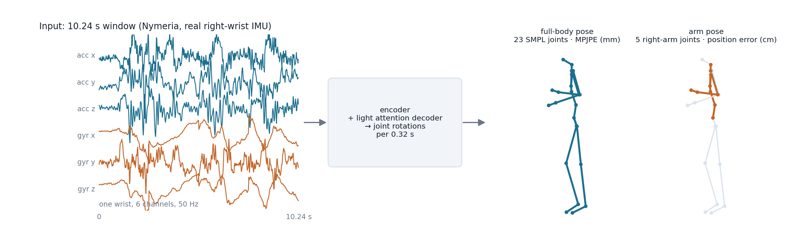
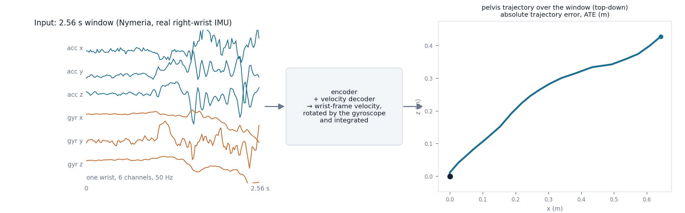
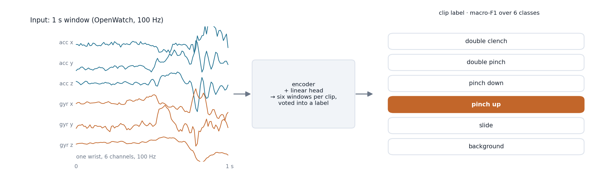
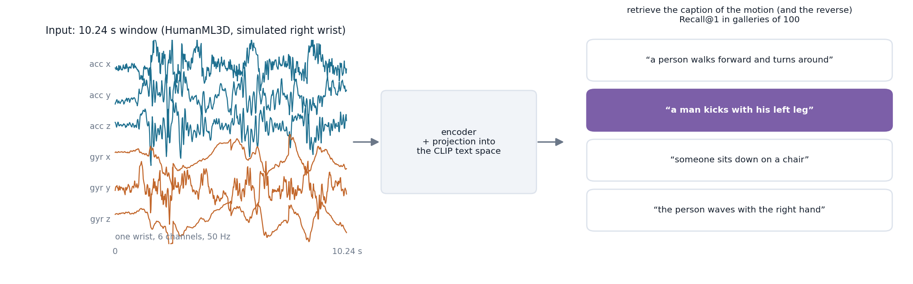
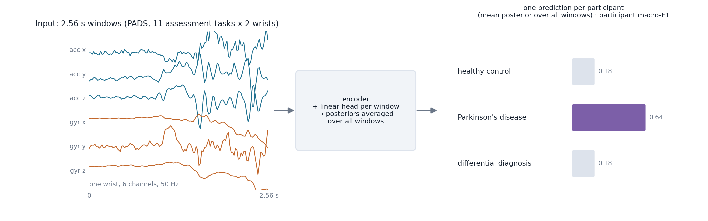
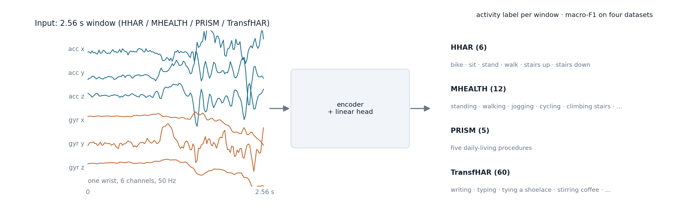

Tasks¶
Ten tasks from eight datasets, in six families. Every task reads the same input, one wrist's accelerometer and gyroscope in a forward–left–up frame, and is defined by a task card that fixes the window, the decoder, the training recipe, the split, the selection rule and the scorer (see Task cards). The figures below show, for each family, the input window, what the encoder and the card's decoder produce, and how it is scored. Input traces are real Nymeria right-wrist windows; labels, captions and class scores are illustrative.
Pose estimation¶

Arm pose arm_pose_nymeria |
Full-body pose full_body_pose_nymeria |
|
|---|---|---|
| Dataset | Nymeria: real right-wrist IMU with Project-Aria motion capture, 300 h released | same |
| Input | 10.24 s window at 50 Hz | same |
| Output | 6-D rotations of the five right-arm joints (collar, shoulder, elbow, wrist, hand) per 0.32 s patch | 6-D rotations of the 23 SMPL body joints per 0.32 s patch; the pelvis orientation comes from ground truth |
| Decoder | width-192 attention decoder, two cross-channel and two temporal layers | width-192 attention decoder, one cross-channel layer |
| Metric | forward-kinematics position error of the five joints, cm ↓ | root-relative MPJPE over the 23 joints, mm ↓ |
| Split | by recording session (867 training, 101 evaluation sessions); participants recur | same |
Frozen features trail training from scratch on full-body pose; fine-tuning InrtlWrist reaches 88.1 mm against 92.7 mm from scratch.
Inertial odometry¶

Inertial odometry odometry_nymeria_local |
|
|---|---|
| Dataset | Nymeria (same recordings as the pose tasks) |
| Input | 2.56 s window at 50 Hz |
| Output | pelvis velocity in the wrist frame, four values per 0.32 s patch |
| Decoder | width-192 attention decoder, one temporal layer |
| Scoring | the predicted velocities are rotated into the world frame with the ground-truth initial wrist orientation propagated by integrating the gyroscope, summed into a trajectory and compared with the pelvis trajectory: absolute trajectory error, m ↓ |
| Split | by recording session |
The protocol uses the true initial orientation and short windows, so it is easier than full inertial navigation and its numbers are not comparable to world-frame odometry systems. Fine-tuned InrtlWrist reaches 0.154 m ATE against 0.162 m from scratch.
Microgesture recognition¶

Microgesture microgesture_openwatch |
|
|---|---|
| Dataset | OpenWatch: five hand gestures (double clench, double pinch, pinch down, pinch up, slide) plus background, real recordings |
| Input | 1 s windows at 100 Hz, six windows per clip from a centred 2 s interval |
| Output | class logits per window; a clip is labelled by the first run of three identical window predictions, else by majority |
| Decoder | linear head |
| Metric | clip macro-F1 on the test split ↑ |
| Split | by participant over the 43 canonical identities (the release's 50 ids contain duplicated and mirrored recordings), stratified by posture |
Frozen InrtlWrist reaches 64.7 clip F1 and stays ahead of every fine-tuned matched method on this task.
IMU–text retrieval¶

IMU–text retrieval language_humanml3d |
|
|---|---|
| Dataset | HumanML3D motions with right-wrist IMU simulated from the motion capture (UniMTS release), with captions |
| Input | 10.24 s window at 50 Hz |
| Output | an embedding aligned with the CLIP ViT-B/32 text space |
| Decoder | a projection, trained with paired motion–text supervision for every encoder alike |
| Metric | mean Recall@1 over IMU→text and text→IMU in galleries of 100 (200 random galleries on the official test split; the full gallery holds 3,701 clips) ↑ |
| Split | the official HumanML3D split; 437 of the test clips share source frames with training clips, which affects every encoder equally |
All encoders receive paired supervision during downstream training, so the task measures how well a pretrained representation supports learning alignment, not zero-shot alignment. Under frozen probing no supervised source task approaches the pretrained encoder here (27.9 Recall@1).
Parkinson's disease classification¶

Parkinson's disease pd_pads |
|
|---|---|
| Dataset | PADS (PhysioNet): 469 participants, healthy control, Parkinson's disease or differential diagnosis; eleven scripted assessment steps recorded on both wrists |
| Input | 2.56 s windows at 50 Hz; each (participant, step, wrist) recording is its own single-wrist session |
| Output | class logits per window; a participant's prediction is the argmax of the mean posterior over all of that participant's windows |
| Decoder | linear head, inverse-frequency class-weighted cross-entropy |
| Metric | participant macro-F1 over the three classes ↑ (balanced accuracy is reported too) |
| Split | subject-disjoint 80/20 (375 / 94 participants) |
The participant metric is coarse: a never-trained frozen encoder reaches 51.7, so encoders within a few points of each other are not separated by it.
Activity recognition¶

HHAR har_hhar |
MHEALTH har_mhealth |
PrISM har_prism |
TransfHAR har_userwatch |
|
|---|---|---|---|---|
| Classes | 6 | 12 | 5 global daily-living procedures | 60 everyday hand activities |
| Subjects | 9 | 10 | 31 | 10 |
| Split | subject-disjoint, 20 % held out | subject-disjoint, 20 % held out | subject-disjoint, 20 % held out | 80/20 in time within each recording, since most activities were performed by one participant |
All four use 2.56 s windows at 50 Hz, a linear head and window macro-F1 ↑; the leaderboard's activity column is the mean over the four sets. These sets are held out of the released pretraining corpus; the activity datasets that are in the corpus (WISDM, PAMAP2, RecoFit, SAMoSA, UT-Watch) appear in the website's per-task table for reference only.